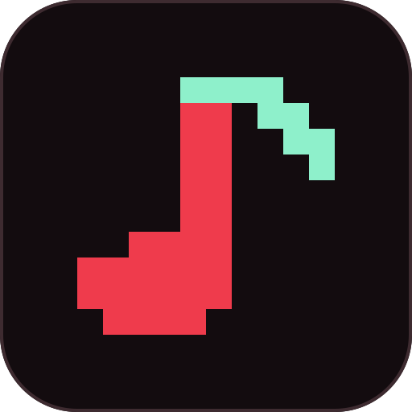

Retro Music Toolkit · 试听
以下全部由仓库内的 JSON 乐谱离线渲染，没有使用任何模型生成。
每个片段都可从对应工程重新导出，结果一致。
Starfall Causeway
Genesis · FM
32.0 s · 120 BPM · 16 小节 · loop · −21.59 LUFS · 真峰值 −6.18 dBFS
从零编写：独立 FM 音色、A2 句尾变奏、回答声部、连奏滑音与弯音。
Starfall Causeway（采样改编）
SNES · sampled
35.6 s · 同主题 · 内嵌双音区 WAV · −21.60 LUFS
同一份乐谱换成采样音色，演示音色与乐谱解耦。
Pixel Trail
NES · pulse
29.1 s · 132 BPM · 16 小节 · loop
两路脉冲 + 三角低音 + 合成鼓，AABA 结构。
Lantern Harbor
SNES · sampled
38.4 s · 100 BPM · 16 小节 · loop
五轨编配，含弦乐和声与回答声部。